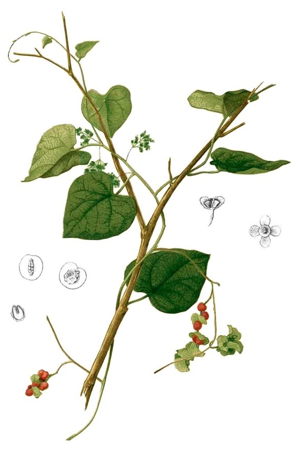

पाठाPatha
Cissampelos pareira · Menispermaceae · FLR-0137

- Scientific name
- Cissampelos pareira L.
- Family
- Menispermaceae
- Hindi
- पाठा
- Status here
- native
- IUCN
- not evaluated
- Review
- audited and independently read
When to look कब देखें
Present all year.
Uses and possibilities उपयोग और संभावनाएँ
“Traditional medicine” means a documented traditional use, not a claim that it works. Nothing on this page is medical advice.
Drawn from the documented uses in the profile below, where each is labelled traditional, current or a research lead. All uses →
पाठा / Patha
Cissampelos pareira L. — Menispermaceae
पाठा — एक बेल जिसकी पत्तियाँ मखमल जैसी नरम और गोल होती हैं। यह बेल बाड़ों, पुराने पेड़ों और जंगली जगहों पर चढ़ी मिलती है। फूल छोटे, हरे या सफेद, गर्मी में खिलते हैं। फल गोल, काले-भूरे, दिसंबर तक पकते हैं। यह बेल पूरे भारत में औषधि के लिए जानी जाती है, खासकर बुखार और जोड़ों के दर्द में।
Quick Identification त्वरित पहचान
| Feature | Description |
|---|---|
| Habit | Slender, twining, herbaceous or weakly woody climber, 1–2 m |
| Leaves | Alternate, orbicular to reniform (kidney-shaped), 5–15 cm broad, velvety-hairy, palmately 5–7 veined |
| Stems | Slender, greenish, twining, mostly herbaceous |
| Flowers | Small, greenish-white, unisexual; male and female on separate plants (dioecious) |
| Fruits | Drupes, globose, 6–8 mm diameter, green ripening to black; one per flower |
Field tip: A soft-stemmed climber with distinctive large, round, velvety leaves that feel like soft cloth. The plant is slender and delicate compared to woody climbers. Flowers are inconspicuous; the ripe black fruits are the clearer sign of maturity.
Morphology आकारिकी
Biometrics (typical measurements for wild plants in the Indian subcontinent):
| Measurement | Range |
|---|---|
| Vine length | 1–2 m, occasionally more |
| Leaf blade length | 5–15 cm |
| Leaf blade width | 5–15 cm |
| Petiole length | 3–8 cm |
| Flower width | 3–5 mm |
| Fruit diameter | 6–8 mm |
Stems: Slender, green, glabrous or slightly hairy, twining. The vascular system is characterized by compound wood arcs (unusual in climbers), a diagnostic feature of the Menispermaceae family.
Leaves: The diagnostic feature. Alternate, broadly ovate to reniform, apex rounded or slightly emarginate, base cordate. The surface is densely covered in soft hairs (velutinous), giving a velvety texture. Margins are entire. Venation is palmate, with 5–7 main nerves radiating from the petiole insertion.
Flowers: Small and inconspicuous, in short axillary racemes. Unisexual; plants are dioecious (male and female flowers on different plants). Male flowers have numerous stamens; female flowers have a single carpel.
Fruits: Globular drupes with a single large stone. Green when young, ripening to black-purple. The fruit coat is thin and easily eaten by birds. The stone is ridged.
हिंदी: पत्ती मखमल जैसी नरम, गोल, सफेद नसें। बेल पतली, हल्की। फल काले, छोटे।
Behaviour & Ecology व्यवहार और पारिस्थितिकी
A native Asian climber, distributed from India and Sri Lanka through Southeast Asia. It is a pioneer colonizer of disturbed ground, quickly climbing over hedges, scrub, and fallen logs. Unlike woody climbers, it is herbaceous or only weakly woody, and dies back in winter in cooler regions, resprouting from the rootstock in spring.
The plant is dioecious, meaning male and female flowers are on separate plants. This has implications for fruit production: only female plants bear fruit, and they require pollen from male plants for successful reproduction. In cultivation, female plants with nearby male plants are therefore more productive.
The small black fruits are eaten by birds, particularly in winter when other food is scarce, aiding seed dispersal.
हिंदी: यह बेल उजाड़ जगहों पर जल्दी उग जाती है। ठंड में मर जाती है, बसंत में फिर से निकलती है।
Life Cycle / Phenology जीवन चक्र
| Month / Season | Event |
|---|---|
| March–April | New shoots emerge from the woody base (rhizome); vine growth accelerates |
| May–June | Vegetative growth; vines covering support structures |
| July–September | Flowering; inconspicuous flowers |
| September–November | Fruit maturation; fruits ripen from green to black |
| December–February | Partial leaf drop in cooler regions; fruit remains on plant |
| February onwards | Regrowth from the perennial base |
The plant can persist for many years from a single rootstock, even if the aerial shoots die back.
हिंदी: बसंत में नई पत्तियाँ, गर्मी में फूल, सर्दी में काले फल। ठंड में पत्तियाँ झड़ जाती हैं पर जड़ें बचती हैं।
Associated Species / Interactions संबंधित प्रजातियाँ
- Hedge companions: Often found alongside Rosary Pea, Lantana, and other hedgerow plants.
- Seed dispersal: Fruits eaten by birds, particularly Ashy Prinia and other small birds.
- Medicinal plant network: Used in conjunction with other traditional herbs in Ayurvedic formulations.
Pests and Diseases कीट और रोग
- Generally hardy: Few serious pests recorded.
- Leaf spots: Occasional fungal spots on leaves in humid conditions.
- Modest browse: Livestock may nibble shoots but do not favor the plant.
Agricultural / Human Relevance कृषि प्रासंगिकता
Traditional medicine (documented traditional uses; not medical advice).
Traditional and Ayurvedic use. The plant is recorded in classical Ayurvedic texts including the Charaka Samhita, Sushruta Samhita, and Bhava Prakasha. It is known by the Sanskrit name Patha and classified as bitter (tikta), astringent (kashaya), and warming (ushna) in nature. Traditional preparations include:
- Root and stem decoction: Taken for high fever, joint pain, and general weakness. The plant is often combined with other fever-reducing herbs like Nirgundi and Adusa.
- Leaf poultice: Applied to inflamed joints and wounds.
- Prescribed in women's health: Traditional texts recommend it for menstrual irregularities and post-partum recovery, though these are historical uses now investigated only in laboratory settings.
Documented sources. The plant is included in the Wealth of India compendium and is listed in Kirtikar & Basu's Indian Medicinal Plants.
Today. The plant continues to be used in Ayurvedic formulations and is collected from the wild or cultivated in gardens by herbalists and practitioners of traditional medicine.
Research direction (a lead, not a result). The plant contains alkaloids and is under investigation in ethnopharmacology for anti-inflammatory and analgesic properties, but no clinical evidence supports the traditional uses, and the plant should not be self-administered.
हिंदी: पाठा बुखार, जोड़ों के दर्द, और कमज़ोरी में आयुर्वेद में दिया जाता है। यह कड़वा और गर्म माना जाता है। औषधि बनाने वाले इसे दूसरी जड़ी-बूटियों के साथ देते हैं।
Expected Locally स्थानीय रूप से अपेक्षित
Not a field record. Written from published accounts for eastern Uttar Pradesh. No confirmed local sighting yet — if you have seen it, that is what the atlas needs.
अभी तक स्थानीय पुष्टि नहीं। यह विवरण प्रकाशित स्रोतों से है, किसी अवलोकन से नहीं।
To be expected in hedges, fallow land, and grove margins throughout Basti district. The plant is more common in the eastern Gangetic plain and the foothill regions. Local knowledge of its medicinal use would be valuable to record, as would observations of its flowering and fruiting times.
Distribution वितरण
Global range: Indigenous to tropical Asia, distributed from India and Sri Lanka through Bangladesh, Southeast Asia, and southern China.
In India: Found throughout the peninsula and the Gangetic plain, from the sea level to about 1500 m elevation.
In Uttar Pradesh: Distributed in eastern and central districts, often in hedges and waste ground.
In Basti district / eastern UP: To be expected in hedges, fallow land, and disturbed areas. The plant may be cultivated in medicinal herb gardens.
Research Questions शोध प्रश्न
Anyone can investigate these | कोई भी इन प्रश्नों की जाँच कर सकता है
- Where is patha found in your village or surrounding area? / आपके गाँव के पास पाठा कहाँ मिलता है? — Record location, GPS, and habitat (hedge, fallow, grove margin).
- Do people in your community use patha for medicine? — Interview elders about traditional uses; photograph any prepared decoctions or dried plant material.
- Are male and female plants found together, or separately? — Observe plants in your area during flowering and fruiting; note which plants bear fruits.
- Which birds eat the ripe black fruits? — Observe a fruiting plant during fruit ripening season; record bird species and feeding behavior.
- Can you dry patha leaves and make a decoction following traditional recipes? — Document the process and test for bitterness and astringency; note any effects on digestion if consumed as a warm tea. / क्या आप पाठा की पत्तियाँ सुखाकर काढ़ा बना सकते हैं?
Similar Species मिलती-जुलती प्रजातियाँ
| Species | How to tell apart | हिंदी |
|---|---|---|
| Rosary Pea (Abrus precatorius) | Leaves are compound and pinnate (many small leaflets); fruits are hard and bright red-black beads | रत्ती — कई छोटी पत्तियाँ; बीज लाल-काले, कठोर |
| Shikakai (Senegalia rugata) | Leaves pinnate; stems armed with hooked prickles; pods are thick and fleshy | शिकाकाई — काँटेदार; फली मोटी |
| Colocasia or wild arum (Alocasia spp.) | Not a climber; leaves arrow-shaped, arising from underground tuber | अरबी — सीधा पौधा, कंद से निकलता है |
Field rule: A soft-stemmed climber with distinctive large, round, velvety leaves that feel like cloth, twining over hedges and producing small black fruits is patha.
Taxonomy & Classification वर्गीकरण
Original description. Described by Linnaeus in 1753 in Species Plantarum. The genus Cissampelos contains about 15 species, mostly Old World tropics.
Subspecies. Monotypic — no subspecies are currently recognised.
Family and order placement. Menispermaceae, order Ranunculales. The Menisperms are tropical lianas and climbers, characterized by compound wood arcs and monocolpate pollen. The family is distinct from the Cucurbitaceae and Ranunculaceae despite superficial similarities.
Phylogenetic notes. Cissampelos pareira sits within a clade of Old World tropical menisperms. Its close relative Cissampelos sulcata occurs in Africa.
IUCN status rationale. Not evaluated. Widespread in its native range with no documented threats.
Photo Gallery फोटो गैलरी
Photos needed आवश्यक फोटो
- [ ] Vine showing the characteristic velvety round leaves
- [ ] Flower clusters (though inconspicuous)
- [ ] Mature black fruits on the plant
References संदर्भ
- Linnaeus, C. (1753). Species Plantarum. Laurentii Salvii, Stockholm.
- Hooker, J.D. (1872). Flora of British India, vol. 1. L. Reeve & Co., London.
- Kirtikar, K.R. & Basu, B.D. (1935). Indian Medicinal Plants, vol. 1. Lalit Mohan Basu, Allahabad.
- Chopra, R.N., Chopra, I.C., Handa, K.L. & Kapur, L.D. (1958). Indigenous Drugs of India. U.N. Dhur & Sons, Calcutta.
- Sharma, N.C. (1960). Indian Materia Medica, vol. 1. Popular Book Depot, New Delhi.
- GBIF Occurrence Data — Cissampelos pareira, India (2015–2026).
Source file: species/flora/climbers/patha.md